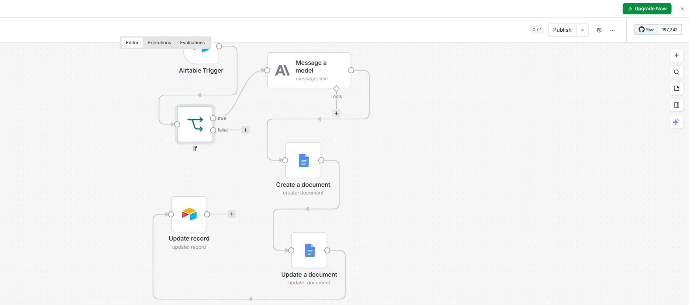

Sal's Home Improvement, a practice client for my consulting portfolio, originally had an estimate automation built in Zapier: a customer submits a project inquiry, Airtable stores the lead, GPT-4o drafts a cost estimate, and the result is written to a Google Doc. To explore a cheaper, more flexible alternative for clients who outgrow no-code tooling, I rebuilt the entire pipeline in n8n — a self-hosted, open-source automation platform — running locally via Docker at zero recurring cost.

The finished n8n pipeline — Airtable Trigger → IF → Claude → Google Docs Create → Google Docs Update → Airtable Update Record
Version 1: Zapier
The pipeline
- Airtable holds the job record and does the pricing math via formula fields
- A Zapier automation watches for a status change and triggers the rest of the flow
- GPT-4o drafts the estimate content from the job notes
- Result lands in a formatted Google Doc; a follow-up message is written and saved back to the record
Gotchas
([Insert Notes from Airtable]) showing up instead of a live field value — the prompt wasn't actually using a dynamic field chip
Version 2: n8n
The pipeline
- Same Airtable base and pricing formulas, self-hosted automation instead of Zapier
- An Airtable Trigger node fires on status change, same as the Zapier version
- Claude generates the estimate content in place of GPT-4o
- A separate Google Docs Create + Update step writes the result; Airtable gets the doc link written back
Gotchas
- Trigger silently failing with
Field does not exist— the Last Modified field had no value on untouched rows, and Airtable's API omits empty fields entirely - A field-naming mismatch: the prompt referenced "Patio," the base actually used "Concrete" terminology
- Google Docs' Create step only sets a title — a separate Update/Insert Text step was required to actually write content
- The Docs API returning only a document ID, requiring the shareable link to be built manually
The real difference wasn't the concept — it was the debugging. Both versions hit real, non-obvious bugs, but they came from different places: Zapier's issues were mostly about correctly wiring dynamic data between steps in a visual builder, where a small misconfiguration (a hardcoded ID, a missing field chip) fails silently. n8n's issues were lower-level — API response shapes, empty-field edge cases, and needing to understand exactly what each Google API call did and didn't return. Neither platform was "buggy"; each demanded a different kind of attention.
1. Set Up n8n Locally
- Installed Docker Desktop and resolved a "failed to connect to Docker daemon" error by enabling WSL 2 (required for Docker on Windows) and restarting.
- Launched n8n with:
docker run -it --rm --name n8n -p 5678:5678 \
-v n8n_data:/home/node/.n8n \
docker.n8n.io/n8nio/n8n- Confirmed the instance stayed on n8n's free Community tier.
2. Built the Lead Intake Form
Rather than hosting the intake form in n8n itself, I used Airtable's native Forms feature, generated directly from the estimate table's columns — simplifying the pipeline by letting Airtable handle both form hosting and initial data capture.
3. Connected Airtable as the Trigger
Configured an Airtable Trigger node with a scoped Personal Access Token. The trickiest bug of the whole build showed up here: the trigger kept failing with Field does not exist, even though the field name was correct. The real cause was that Airtable's "Last Modified" field was configured to track only one specific column, so untouched rows had no value in it at all — and Airtable's API omits empty fields from its response entirely. Populating that field across all rows resolved it.
4. Generated the Estimate with Claude
Added an Anthropic node running Claude to turn the structured Airtable fields into a client-ready written estimate. Hit a second subtle bug: the prompt referenced field names like "Patio Sq Ft," but the base actually used "Concrete" terminology throughout — resolved by reading the exact field names directly from the trigger node's raw JSON output rather than guessing.
5. Recreated the Google Doc Output
To match the original automation's output format, I set up a Google Cloud project, enabled the Docs and Drive APIs, and configured OAuth credentials for n8n. One more non-obvious issue: n8n's Google Docs "Create" operation only sets a document's title — actually writing content requires a separate "Update" step with an "Insert Text" action chained after it.
6. Wrote the Result Back to Airtable
A final Airtable node saves the generated Google Doc's link back onto the original record. This step needed a fresh Airtable token with explicit read, write, and schema scopes, and since the Google Docs API only returns a document ID (not a ready-made link), the shareable URL was constructed manually:
{{ "https://docs.google.com/document/d/" + $('Create a document').item.json.id + "/edit" }}Power-Up: Reading Handwritten Notes
new capabilityExtended the pipeline to read handwritten customer notes directly from a photo, rather than requiring everything to already be typed into Airtable. An HTTP Request node downloads the photo attachment as binary data, and a second Claude node (using its native image-analysis capability) transcribes the handwriting. That transcription then feeds into the same estimate-generating Claude node as an additional input alongside the structured Airtable fields — so anything mentioned by hand but missed in the form gets captured too.
Gotcha: The Stale Test-Data Mystery
debuggingThe trickiest issue of this whole extension: no matter which record was actually most recently updated in Airtable, n8n's manual "Fetch Test Event" button on the trigger node kept returning the same old record every time — even after deleting and re-adding the node entirely. After ruling out pinned data, caching, and stale credentials, the real explanation turned out to be simpler: that button isn't designed to simulate "what would fire right now" — it just grabs a fixed sample for mapping fields, and behaves completely independently of the trigger's actual live polling logic. The fix wasn't a fix at all — it was recognizing the manual test button and the live, published trigger are two different code paths, and testing against a manually-entered stand-in record was the correct way to keep building without that button's cooperation.
Gotcha: Signed URLs Expire
debuggingAirtable's attachment URLs are short-lived, signed links — testing with one that had gone stale produced a clean 410: This URL has expired error. Easy to fix once identified (just re-fetch a current URL), but a good reminder that anything hardcoded for testing purposes needs to be refreshed if too much time passes between fetching it and actually using it. In production, this is a non-issue — the live trigger fetches a fresh URL on every single run.
Gotcha: Claude's Thinking Block
debuggingThe estimate-generating Claude node has extended thinking enabled, which means its response array doesn't always have the actual answer at a fixed position — a "thinking" block sometimes precedes the real "text" block, and sometimes doesn't. An expression hardcoded to grab content[1] broke whenever a particular run's response shape shifted. Fixed by searching for the right block by type instead of assuming its position:
{{ $('Message a model').item.json.content.find(c => c.type === 'text').text }}Going Live
Once the extended pipeline worked end to end against manual test data, the workflow was published to actually activate live polling. Verifying it required genuine data changes rather than repeated manual test clicks — toggling a record's status through a different value and back forces Airtable's Last Modified timestamp to update for real, which is what the live trigger actually watches for. Three separate records were run through the completed pipeline this way, confirming it works consistently rather than just once.
Result
The end result is a fully self-hosted, free equivalent of the original Zapier automation — now extended to read handwritten notes directly from a photo, not just typed form fields — a useful option to offer clients who want more control over their stack, or who are looking to cut recurring automation costs as usage scales.